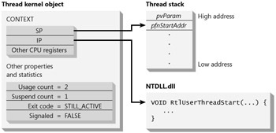

在 Windows 中，进程是被动式的，其没有什么需要内核调度到 CPU 进行执行。 内核调度的实际上是线程，当然，每次建立一个新进程的时候，会为进程建立内核对象，分配地址空间，同时还会建立一个主线程，这样内核就会调度主线程的代码了。一般来说，我们进程的主线程入口是 main,wMain,winMain,wWinMain，这些函数其实其实也和我们手动建立的线程的入口线程有相似的地方。
CreateThread
我们可以用 CreateThread 来建立一个线程。
HANDLE CreateThread( |
几个参数看起来并没有什么特意的地方，我们之前好像说过，对于每个建立内核对象的函数来，其肯定都会有一个 PSECURITY_ATTRIBUTES 参数，用来指定此内核对象的安全属性，是否可以继承等。
- cbStack 用来指定用从进程的地址空间内分配多大的空间给此线程使用。每个线程都会有自己的对栈用来存储线程内的本地变量。
- pfnStartAddr 执行的函数地址。
- pvParam 传递给函数的参数
- fdwCreate 创建线程时的一些标志。要么是0，要么是 CREATE_SUSPEND，如果是后一个值，内核不会调度线程。，在这个时候我们可以对线程做一些初始化的操作。
- pdwThreadID 用来返回建立好的线程的ID。
注意：CreateThread 是 Windows 函数，如果我们正在编写 c/c++ 代码，应该调用 _beginthreadex，后面会建设这个函数的重要性。
线程终止
有几种方法可以终止一个线程的执行：
- 线程执行函数自然返回
- 线程内
VOID ExitThread(DWORD dwExitCode)函数（最好不用）操作系统的分配的资源可以正确的释放，如线程栈，内核对象等。但是对于 C++ 的类对象等，就不能被正确的释放。 - 同进程内其他线程，或其他进程调用
BOOL TerminateThread(HANDLE hThread,DWORD dwExitCode);当我们使用这种形式的时候，连线程的堆栈都不会被释放。 - 函数（应该避免这种方法）
- 进程终止了（应该避免）
线程函数返回
之所以尽量使用这种方式的原因在于：
在线程函数中创建的所有C + +对象均将通过它们的撤消函数正确地撤消。
操作系统将正确地释放线程堆栈使用的内存。
系统将线程的退出代码（在线程的内核对象中维护）设置为线程函数的返回值。
系统将递减线程内核对象的使用计数。
内核线程对象内部细节

我们建立后的线程内核对象大体上来说是上图那样的。CreateThread 函数会让系统建立一个线程内核对象。此内核对象的初始引用计数是2，挂起计数为1，退回代码设置为 STILL_ACTIVE(0x103)，同时对象的状态设置为未收到信号状态。
需要明确的是，每个线程都有一个线程栈，我们所谓的函数执行时候的栈帧，就是在线程栈上生成的。
内核对象建立后，系统从进程的地址空间为此线程的栈分配内存，接着就会在栈顶写入两个值。1）pvParam，2）pfnStartAddr。
每个线程都有其自己的 CPU 寄存器集合，我们把这些寄存器的集合叫做 上下文。上下文记录了此线程上一次执行时候的CPU寄存器，其保存在一个 CONTEXT 结构中（定义在 WinNT.h 头文件中）。此结构包含在 线程内核对象中。
在线程的上下文中，IP（指令指针寄存器），SP（堆栈指针寄存器） 是最重要的两个寄存器。当线线程内核对象初始化的时候，CONTEXT 结构中的 SP设置为 pfnStartAddr 的在线程栈上的地址；IP 设置为一个没有文档说明的函数 RtlUserThreadStart 函数，这是由 NTDLL.dll 导出的。
VOID RtlUserThreadStart(PTHREAD_START_ROUTINE pfnStartAddr, PVOID pvParam) { |
这个时候线程已经完成了初始化，系统会检查一下 CreateThread 的 标志位参数是否设置了 CREATE_SUSPEND。如果没有设置的话，那么此线程已经能被调度，系统会将 CONTEXT 中的值加载进 CPU 的寄存器中。
因为新线程的 IP 是指向 RtlUserThreadStart 的，所以这里才是新线程开始执行的地方。RtlUserThreadStart 的原型看起来，会让我们以为这个函数接受两个参数，但这隐含的表明这个函数是由其他函数进行调用的，事实上，并不是这样的。
新线程简单的从这个时候开始存在和执行。RtlUserThreadStart 之所以能够访问两个参数是因为系统显式的将这两个值写到了线程的栈上（线程的开始）。当有的CPU架构使用 CPU 寄存器来传递参数而不是栈时，系统会初始化对应的寄存器，然后再执行 RtlUserThreadStart。
我们在 RtlUserThreadStart 会调用 ExitThread 或者 ExitProcess。这就意味着我们的线程不会离开这个函数，其只会在这函数中结束。这就是我们 RtlUserThreadStart 原型定义其返回值为 VOID 的原因。
我们的线程函数在完成工作后会返回。RtlUserThreadStart 调用我们的线程函数的时候，RtlUserThreadStart 会将其返回地址推到栈上，这样我们的线程函数返回后就可以继续在这里执行。但是呢 RtlUserThreadStart 是不允许返回的，如果其不强制结束进程而是简单的试图返回，那就会返回一个访问违例，因为 RtlUserThreadStart 并没有返回地址，这样其返回会到一些随机的内存位置。
进程的主线程初始化时 IP 也是指向 RtlUserThreadStart。
C/C++ 运行时库
C/C++ 运行库是什么东西？这是 C/C++ 标准所定义的一些库函数。早期的时候，存在一个支持单线程应用的库，而其他库支持多线程。为什么会存在这种情况呢？这是因为标准 C 运行使馆库是在 1970 年发明的，这比线程早出现了很多年。当时的发明者并没有考虑 C 运行库在多线程应用下运行的问题。
当前微软考虑到了这个问题，将 C/C++ 运行库都实现为线程安全的，但这需要我们在多线程的时候注意一些操作。比如 CreateThread 与 _beginthreadex 的差异。
同时我们还需要明白一点，C/C++ 运行库，是基于 Windows 的提供的 API 来实现的。可以看看这些层级关系：

有四个原生开发的 C/C++ 运行时库，有两个用于 .NET。这几个库都支持多线程，当前已经不存在单独支持单线程的 C/C++ 库了。
| 库名 | 描述 |
|---|---|
| LibCMt.lib | 发布版静态链接库 |
| LibCMtD.lib | 调试版静态链接库 |
| MSVCRt.lib | MSVCR80.dll 库的导入库 |
| MSVCRtD.lib | MSVCR80D.dll 库的导入库 |
| MSVCMRt.lib | 用于 托管/原生代码的导入库 |
| MSVCURt.lib | 被编译成 100% MSIL 代码的导入库 |
C 运行时有一个全局变量 errno。有些函数会在调用失败的时候设置这个变量的值。
BOOL fFailure = (system("NOTEPAD.EXE README.TXT") == -1); |
这在多线程的情况下会出现很大的问题。
对于多线程的 C C++程序来说，想要正确的工作，那些使用了 C/C++ 运行时库函数的线程必须有一个自己的数据结构；那么当我们在线程中调用 C/C++ 运行时库函数的时候，这些函数必须知道怎么样找到调用线程关联的数据结构而不影响其他线程。也就是说，设置自己的线程内的全局变量，获取也只获取自己线程内的全局变量等。
所以，怎么样让操作系统知道需要在新线程建立的时候分配这些数据结构？事实上操作系统才不管这个事情，因为其并不知道你的应用是用 C/C++ 写的，也不知道你调用的函数不是线程安全的，我们必须自己保证正确性。因此，在建立线程的时候，不要调用 Windows 操作系统的 CreateThread 函数，而是调用 C/C++ 运行时库函数 _beginthreadex。
unsigned long _beginthreadex( |
这看起来和 CreateThread 很像，但是函数参数的类型并不相同。这是因为 微软 C/C++ 运行时库小组认为C/C++ 运行时库函数不应该依赖于 Windows 的数据类型。可以用一个宏来简化我们的操作：
typedef unsigned (__stdcall *PTHREAD_START) (void *); |
_beginthreadex
为什么要调用这个函数，而不是要调用 CreateThread 函数呢？
答案是，为了线程安全。MSVCRT.dll 中的函数大多实现为线程安全的，当我们用 CreateThread 建立了一个线程，而我们又在线程中调用了 C 运行库函数时，如果这些函数需要一个线程相关的数据结构，会自动建立，但退回的时候却不会自动释放，所以在进程的运行期间可能会出现内存的泄漏问题。
而 _beginthreadex 分配的线程相关的数据结构，会在线程结束时自动释放。
uintptr_t __cdecl _beginthreadex ( |
我们需要注意几点：
- 每个线程会获取其自己的 _tiddata 数据库，这是从 C/C++ 运行使时库的堆上分配的。
- 传递给 _beginthreadex 函数的线程函数和参数会保存在 _tiddata (定义在 Mtdll.h 中）结构中。
- _beginthreadex 确实会调用
CreateThread来建立新线程，因为这是唯一建立线程内核对象的方式。 CreateThread调用的时候，会从_threadstartex，而不是从pfnStartAddr开始执行。同时，传递给_threadstartex的参数是我们分配的 _tiddata 结构，而不是 pvParam。
我们的 _tiddata 结构已经初始化来，那么其是怎么样与新线程关联起来的呢？我们来看看 _threadstartex 函数（这也是一个 C/C++ 运行时库函数，Threadex.c 文件中）。
_threadstartex
static unsigned long WINAPI _threadstartex (void* ptd) { |
需要注意几点：
- 新线程是从
**RtlUserThreadStart**开始执行，然后跳到_threadstartex这个前面说过。 _threadstartex的参数是 _tiddata。TlsSetValue是一个操作系统函数，其会将一个值与调用线程关联。这就是 线程本地存储了，后面会说。- 我们真正的线程函数会在
_callthreadstartex中被执行。不过这个时候，线程函数及其参数都存储在 TLS 中了。 - 在
_callthreadstartex中调用_endthreadex而你是执行完毕直接返回的原因是：我们需要释放我们之前分配的 _tiddata 结构。
_endthreadex
void __cdecl _endthreadex (unsigned retcode) { |
前面强调过尽量不要使用 ExitThread，因为其会干掉当前线程，而不会从执行中的函数返回，那么我们在函数中构建的任何 C++ 对象都不会被销毁。还有一个原因就是：ExitThread 会阻止 _tiddata 结构的释放。
所以如果要调用 ExitThread 的时候，用_endthreadex 代替吧，当然其实这也是非常不鼓励的。
当 _tiddata 结构初始化并与线程关联后，任何 C/C++ 运行时库函数被调用时可以很容易的通过 TlsGetValue 来获取这个结构，操作里面的数据，得到线程独立的数据实例。对于函数来说这很不错，但是如果对于全局变量呢？比如 errno，这是一个标准的 C 头文件中的全局变量：
_CRTIMP extern int * __cdecl _errno(void); |
我们将其定义为一个宏去，这样的话就可以在 _errno 中拿到线程独立的数据了。